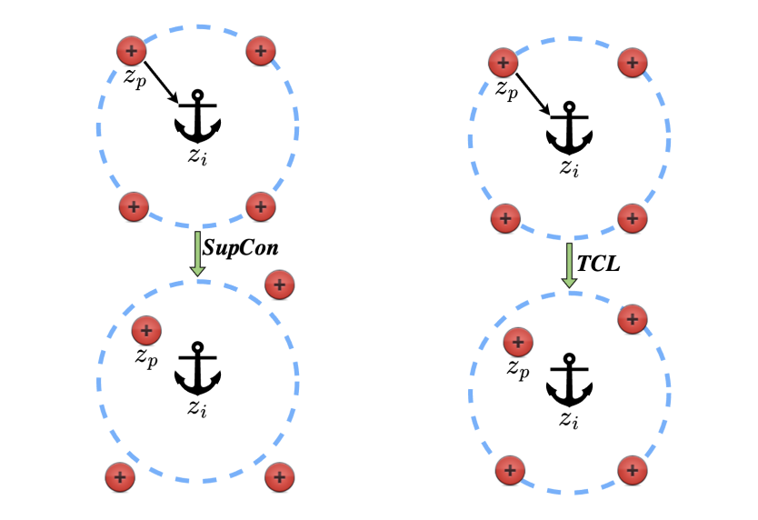
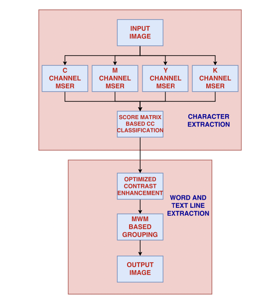
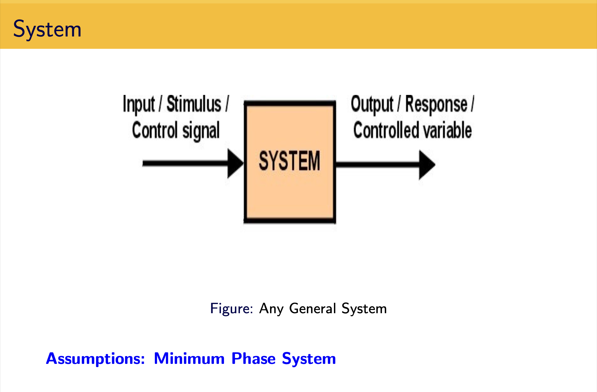

|
Research
I am interested in – 1. Deep learning – self-supervised learning, generative models, domain adaptation, 2. Natural language processing – auto-regressive & large language models and 3. Computer vision – multi-view geometry and learning based recognition. The following is my list of research work currently (hopefully with more to come!).
|
|

|
Tuned Contrastive Learning*
Chaitanya Animesh,
Manmohan Chandraker
Under Review (Code to be released soon!)
arXiv
*Master's Thesis: eScholarship, ProQuest
We propose a novel contrastive loss function that uses multiple positives and multiple negatives and show how it can be applied in both supervised and self-supervised settings. We provide theoretical analysis of how our loss function's gradient response is superior. It beats SupCon loss and performs on par with various SOTA SSL methods.
|
|

|
Fast text detection from single hazy image using smart device
Chaitanya Animesh,
Sabyasachi Mohanty,
Tanima Dutta,
Hari Prabhat Gupta
ICMEW, 2017
Publication
We propose a novel framework for fast detection of text regions in a camera captured single hazy image. A novel text extraction technique using the channels of CMYK color space is used. A simple, fast, and efficient approach of using contrast enhancement technique suitable for smart devices is proposed. A maximum weighted matching based grouping approach is used to form words. We have also created a new dataset of hazy images that contains scene texts and manually annotated the words in it.
|
|

|
Strict Lyapunov Function for System with Nonsmooth PI Controller
Supervisor: Shyam Kamal,
B.Tech. Thesis, 2017
Presentation
Proposed a non-linear fixed time controller in order to track the reference voltage within a fixed time period overcoming the limitations of a PID controller. Mathematically proved the asymptotic stability of the proposed controller using Lyapunov theory of stability.
|
|
{kind=link}